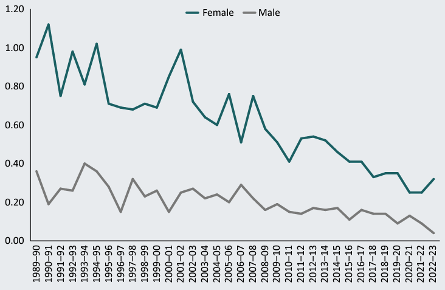
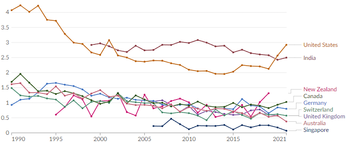

Amid Australia's justified concern over male violence against women, it seems worth keeping in mind our achievements. Femicide, in particular, has more than halved in the past three decades.
Prologue 1: Violence against women is a bad thing, and it's still bad even when, as the article below points out, it used to be far worse. We should be trying hard to lower rates of violence, by finding good solutions and implementing them with urgency. As part of this, we should understand just what we're dealing with – which is what this summary tries to do.
Prologue 2: The latest 2024-25 figures are now out, and the rate of intimate partner homicide against women has fallen back towards its 2022-24 lows. New blog post here.
The issue of violence against women is in the news right now. Here's a short summary of what we knew about the issue in Australia in April 2024 (2025 update here).
- Before we say anything else, we need to acknowledge this: a really accurate picture of violent crime is hard to draw. Of the several factors clouding our vision, one stands out: most police-gathered crime figures are very unreliable. That goes double for violence against women. We can't just hang that on the police, either: many crimes never get reported, or the police don't find enough evidence to charge anyone, or judges and juries don't convict. And all of these things change over time, as society changes.
- It's hard to exaggerate what a problem this data unreliability poses when we try to find out about crime. My strong impression is that most of the public and many commentators expect official crime statistics will tell us everything we need to know. They never do.
- How bad is the problem? One typical analysis claims that "about 70% of domestic violence is never reported to the police." You can probably come up with plenty of reasons why this figure is so high.
- Rates of reporting, charging and convicting thus affect the figures far more than do underlying changes in the actual level of violence in Australia.
- The result of all that is that most experts don't trust all the official statistics to give them an accurate read on what's happening. Instead they look for the most reliable figures – which are, necessarily, the figures that will suffer least from under-reporting. That leads them to use homicide levels as a proxy for general levels of violent crime. That's an approach which the literature broadly supports. Why use homicides as a proxy? Because most homicides make it into the statistics. It's hard to avoid people noticing when someone dies.
- And so to women. The homicide indicators suggest Australian femicide – homicide of women – has fallen over the past three decades at a speed that might surprise many people. Among the most reliable indicators is intimate partner homicide; female victims are down 60+% in the 33 years to 2022-23. See the graph below. (Source: Australian Institute of Health and Welfare, based on figures from the Australian Institute of Criminology's National Homicide Monitoring Program)
Intimate partner homicide, 1989-90 to 2022-23
Rate per 100,000 population aged 18 years and over

Figure from AIC NHMP-
- This slow collapse is honestly amazing, because it came after four decades of rising homicide rates, including a big rise in the 1970s. If you had told me in 1990 that the future of intimate partner homicide would be the sort of decline pictured above, I would have been pretty sceptical, but also excited that things were going to get so much better.
- Here's where the statistical analysis gets more complicated. The Australian Institute of Criminology has released new homicide figures recently (since this post went public, in fact - thanks to Jenna Price for alerting me to this). These figures bring our data up to June 2023.
- These new figures show an uptick in 2022-23. You might take this as saying that intimate partner femicides have been rising. On the other hand, a look at the graph above suggests that bigger jumps in the rate occurred in 90-91, 92-93, 94-95, 2001-02, 05-06, 07-08 and 11-12. This data is just jumpy from year to year, because we're dealing with quite small numbers by statistical standards. In 2022-23, intimate partner femicide claimed 34 victims – few enough to complicate any year-to-year analysis.
- To quote Ben Spivak at the Swinburne Centre for Forensic Behavioural Science : "We have to be careful in drawing conclusions about year-to-year changes in homicide. Given the small underlying numbers, small changes in the number of homicides can be made to look larger than they are when reported as percentage change."
- This caution obviously applies even more so to the four months at the start of 2024, where it is occasionally claimed that femicide has reached epidemic levels. News reports on the Anzac Day 2024 weekend featured a figure of "26 women allegedly killed by men in the first 115 days of the year".That figure presumably includes both intimate partner femicide and other killings of women.
- I don't know how reliable that number is. But on my initial maths, if that rate of homicide continued right through 2024, it would mean 83 female victims of homicide for Australia this year – a rate of .59 female homicides per 100,000 women. Those 83 deaths – worse than one every five days – are way too high. They are not notably out of line with other recent years, such as 2020-21's 69; indeed, they are consistent with a continued gradual fall. The .59 rate would have been a record low just a few years ago. And even if the figures jump again this year, it's not clear what we should make of it: for instance, the figures leapt for a couple of years in a row in the early 2000s, and then just resumed their slide.
- When we step back and look at other countries, Australia seems to have done well by global standards at reducing violence against women. The femicide rate is falling in many places around the world (as shown in the graph below). But not that many places have bettered Australia's rate of change over the past 15 years. At the same time, we shouldn't pat ourselves on the back too hard – because we really just don't know what causes violent crime numbers to move around over the decades in any country, ours included. (Note that this graph goes only to 2021 and does not include the updated figures described above.)
Female homicide rate, 1990 to 2021, per 100,000 women, for Australia and comparator nations

Figure from Our World In Data - This graph of the female homicide rate also underlines another point: it is possible to push the rate much lower than Australia's currently is. Singapore has done it. One question is how much we would be willing to change the nation's culture to replicate Singapore's performance. (That country's law enforcement regime is ... tough. That said, my own view is that an obvious place to toughen Australia's regime would be in enforcement of various court orders around men's violence against women.)
- We do have one more fairly reliable source of domestic violence data – the Personal Safety Survey done every five years by the Australian Bureau of Statistics. This tries to avoid the police crime figures issues by coming at the problem from the other end: it asks members of the general public what crimes they have experienced. As Swinburne's Ben Spivak notes, the survey numbers suggest at worst that overall domestic violence rates are not rising, and at best that they are falling over time. For instance, the rate of cohabiting partner violence against women reported in the Personal Safety Survey fell from 1.7% in 2016 to 0.9% in 2021-22. (We don't have more recent numbers; it's a five-year survey.)
- Some people cite police crime data to argue that the analysis above goes astray. This argument says that rises over the past decade in rates of male offending in categories like "sexual assault and related offences", "abduction and harassment" and "acts intended to cause injury" suggest these types of male violence against women are moving up, even as homicide rates move down. That is, they argue that changes in reporting rates don't explain these numbers. They also point to the past 16 months of intimate partner homicides, where the trend seems to have been up.
- It's possible that they're right. But it does not seem all that likely to me that medium-term homicide has detached itself so thoroughly from other medium-term violence indicators.
- The most likely explanation for rises in these categories seems to me likely to be that the official levels of these non-homicide offences are rising because our efforts to raise reporting, charging and conviction rates are actually bearing fruit – that is, less crimes are slipping through the cracks. Most analysts of crime statistics are wary of police-generated statistics for just this reason. But it is always possible that some of the figures reflect real trends in underlying crime.
To the extent that the homicide indicators a) indicate actual crime levels and b) are at odds with people's perceptions, commentators and the media should work to make both the figures and people's perceptions more accurate. The stories we tell about crime rates have a real impact on people's lives. As crime academics Terry Goldsworthy and Gaell Brotto have noted, a person's fear of current crime levels can be influenced by a number of things, including media exposure. Don Weatherburn, former head of the NSW Bureau of Crime Statistics and Research, has complained: "The female homicide rate is much lower now than it was 20 years ago. The media never report this."
All the above parsing of crime statistics may seem like nit-picking, or even like an apology for domestic violence. (I've been accused of both since writing the original version of this post.)
But such dismissals are foolishness. People rightly believe that reports about crime numbers refer to actual states in the world. How many people out there are like this LinkedIn poster, a director at a specialist social change consultancy? After the recent crop of media reports, he wrote: "The crisis of Australian male violence calls for the mobilisation of every resource at governments’ disposal - nothing less will do." That "every resource at governments’ disposal" is a pretty big ask. Yet if he genuinely believes we have a historic crisis of violence against women, who can blame him for demanding heroic efforts to solve it?
Because crime statistics represent our best way to find out what's going on in the world, they need to be reported with care and insight. The alternative is to try to discuss crime by having people talk only about what their friends down the pub reckon ("Mate, this whole violent crime thing is a made-up problem/out of control") or what they saw on a TV show last week ("Look, it's obvious the real problem is immigrants/keeping the dole too low/30 years of letting crime run rampant"). Crime statistics matter every time some politician or commentator, left or right, makes a claim about the violent crime rate. They matter even more when policymakers start to talk of changing laws.
Yes, it's possible that the male-on-female violence trend has turned for the worse in the past 18 months. But on these numbers, that is not yet obvious. We still seem to me to be in a new era of lower crime. The debate should recognise that fact. And at the same time we should work towards the next era, when crime rates can be lower still.
Major updates: This post has been update several times since its first posting, as new data has come to hand.
- 11 November 2024 update: The AIC has now released preliminary National Homicide Monitoring Program data for the first two quarters of 2024. The cumulative total of female victims of intimate partner homicide for 2024 up to 30 June was 15, compared to 17 for the first two quarters of 2023.
- 28 November 2024 update: The AIC has now released preliminary National Homicide Monitoring Program data for the third quarter of 2024. The cumulative total of female victims of intimate partner homicide for 2024 up to 30 September was 26, compared to 32 for the first three quarters of 2023 and 45 for all of 2023.
- 3 March 2025 update: The AIC has now released preliminary National Homicide Monitoring Program data for the fourth quarter of 2024. The cumulative total of female victims of intimate partner homicide for all of 2024 was 37, compared to 46 for all of 2023. (This last all-of-2023 figure was revised up from 45 three months earlier.)
- 26 October 2025 update: The 2024-25 figures are now out, and the rate of intimate partner homicide against women has fallen back towards its 2022-24 lows. I have a full new blog post on this.
These updates are consistent with all of the observations in the body of the article above.
Note that the updated data includes "cleared" incidents only – that is, where an offender has been charged with murder or manslaughter, an offender died before they could be charged, or the incident was otherwise cleared. Data may therefore change after later updates.
Comments: As usual, yes, I'm an idiot about a lot of things. I really will be grateful if you can point out in the comments specifically where my idiocy lies, and detail the huge mistake(s) I'm making.
 About the author: I studied criminology at the University of Adelaide and have dealt with statistics and their presentation in various roles for more than 30 years. Thanks to Dr Ben Spivak for checking over some of my conclusions; any errors remain my own. Please let me know in the comments if you spot any.
About the author: I studied criminology at the University of Adelaide and have dealt with statistics and their presentation in various roles for more than 30 years. Thanks to Dr Ben Spivak for checking over some of my conclusions; any errors remain my own. Please let me know in the comments if you spot any.
Twitter: @shorewalker1
Thanks for all the work in this David. Just what I've been wanting as I've asked myself the obvious questions about whether this thing is worse or better than before.
David Walker has gently reminded us that the media (here especially the ABC) habitually distort the facts. It would be interesting to see some data on violent crime committed by females. Years ago, Stephen Scarlett, the Sydney Children's Court magistrate commented, "Girls have gone berserk", which suggests violent crime by females might be increasing. There are some that might regard that as an achievement in the struggle for equality.
R.N., my guess is that "girls" are not going beserk, and that violent crime by females is going down at roughly the same rate as violent crime by men. Notably, I can see no evidence that intimate partner homicide against males is going anywhere but down. The top graph above shows this. Other violent crime by women suffers from the usual reporting problems – but to a greater degree, because women commit so much less violent crime. So for instance, the ABS notes in its Personal Safety Survey report that "cohabiting partner violence statistics for men have a high relative standard error and are considered too unreliable to measure changes over time".
Jenna Price has just a few moments ago rung me to say that there are new stats out from the Australian Institute of Criminology this week that prove that violence against women generally is getting worse. I've done a first update incorporating some of the new figures. I've also invited her to send me anything she has that might be of use. (It wasn't a long conversation because she said she had to go.) I'll report back with any new data that she sends me or that I come across.
Look forward to updates Could the shortage of housing be a factor? Surely if leaving the , increasingly, violent partner in practice means, sleeping in your car etc then women who say ten years ago would have simply left a fairly bad situation and moved on, might currently stay on just a bit too long ? Not sure but am not confident that homicide rates are a good proxi, murder and grevious bodily harm rates in the Braidwood region have been very low for decades ,( in twenty years ive not heard of even one murder within say fifty ks of here )however i gather from ecumenical sources that DV in general has at the same time been common and serious in consequences for victims, for decades.
Domestic and public violence are different areas. Public violence often involves gangs, some of it female-against female, which the media can't resist. The gang scene is overwhelmingly male, but there may be a slight change going on. Women are increasingly encouraged to participate in rough team sport and militarism, so it would not be a surprise if they also turned up in less organised forms of rough, competitive teamwork.
Homicides are quite rare in Australia, so the absence of homicide in the (beautiful) Braidwood area is not really something that should surprise us.
Beautiful by the fire today🙂
PS i recently read that in the current total population of Australia, broken down by their age, the biggest single group is those aged 32( from memory) and in general people in thier thirties are now a bigger percentage of the total population. And its in your thirties that many try to settle down have a family , a project that at the moment must be unusually stressful for many. Wondering if that increase in population aged thirty something might be a factor
Demographic change is almost certainly a factor; most crime is committed by people under 30. More to come on this.
One of the unfortunate side effects of the broader understanding of what constitutes violence or assault is that it also gets harder to determine what we're dealing with. What I mean is that I believe just a threat that gets reported to police is considered a case of domestic violence. Again, not saying that it isn't a serious matter, but bucketing that into the same undifferentiated group with beatings and murder can make things difficult to compare. Sexual assault also has the same kind of statistical difficulties. Sexual assault can also be a verbal threat or an unwanted fondle, which can get lumped into the same category as the worst of depravities and add to the count in the same way. And while I'm not much of a Waleed Aly fan, this is a really good article! https://www.theage.com.au/politics/federal/holding-all-men-responsible-for-a-violent-minority-has-failed-to-keep-women-safe-20240501-p5fo82.html
"News reports on the Anzac Day 2024 weekend featured a figure of “26 women allegedly killed by men in the first 115 days of the year”.
The number seems to accurate as far as it goes.
https://www.facebook.com/people/Counting-Dead-Women-Australia/100063733051461/ (click on the 'see more' button under the heading 'Counting Dead Women Australia 8 January'·)
It details all (now) 28 female deaths at the hands of men.
But....
The number includes the five women killed in Bondi Junction plus one or two other deaths which were clearly not DV or intimate partner related. As usually happens with these things, the accurate number is quoted but its not accurately described.
Yes 28 women killed by men. No there weren't 28 DV murders.
I pitched an article like this to the Age. No interest. The usually partisan Conversation had an article that covered much of this about a month back. Another interesting empirical fact is lesbian homicide rates. Links below. https://aifs.gov.au/resources/practice-guides/intimate-partner-violence-lesbian-gay-bisexual-trans-intersex-and-queer?fbclid=IwZXh0bgNhZW0CMTEAAR2uRLe1rnkeEnJNBdOcdamgqZXQJvh9byxh91X9uiqPft9LhFJfjUqwe8o_aem_Ab0IvXpQ5c3TPtd5-qycfw5_bLAgQfmbicWBrGwfUtvRda2aZPIymmaakClkZnNDRk1endedGJV87q_cjP_dZnxF https://theconversation.com/australias-homicide-rate-is-down-over-50-from-the-1990s-despite-a-small-blip-during-covid-202730
Obvious questions are : Is the recent uptick in DV murders an passing upward blip in a overall downward trend, or a sign of something new? And Have reporting rates changed?
Thank you David, I agree, getting an accurate picture of intimate partner violence, is most challenging. As a former teacher and Juvenile Justice convener in Australia and America, I have studied and taught about gender violence for many decades. Only recently I became aware of the work of Nicola Graham-Kevan PhD, is a Professor of Criminal Justice Psychology and Director of the Centre for Criminal Justice Research and Partnership at the University of Central Lancashire and Michael P Johnson, Emeritus Professor of Sociology, Women’s Studies, and African and African American Studies at Penn State, He is an internationally recognized expert on domestic violence. Johnson identified common couple violence which is unique directional, and intimate (patriarchal) terrorism describes the more entrenched power over situation. Nicola Graham–Kevan builds upon Johnson's work and believes the courts need to be aware of the various types of intimate violence. Their work resonates with me and my experience in the field. Best regards, Pip Cornall
The critical question is whether one can arrive at a sufficiently reliable prediction about the RATE OF VIOLENCE against women (perpetrated by their current or former intimate partner) from the data about the RATE OF HOMICIDE against women (perpetrated by their current or former intimate partner), and therefore whether one can
(i) reliably assess the Commonwealth Government's claim that there is a CRISIS in violence against women (by their current or former intimate partner)
AND
(ii) whether Social and Welfare services that are available to women who want to escape from domestic violence are comfortably able to accommodate the demad for help.
I just do not see how any analysis of the data on female intimate partner homicide over the past 20 or so years can predict whether there is currently a crisis in the domestic violence against women (or crisis in general violence again women).
It's my opinion that the best predictor of whether or not there is a crisis in DM violence against women is to actually look at the data from women's shelters around the country to see where there had been a surge over the past 18 months in the number of women who are seeking emergency shelter in order to escape from domestic violence, and whether the demand was met or whether the system is under stress.
Various CEO's of Women’s Shelter are reporting a stressed system.
A stressed situation in women's shelters around the country for 12 or so months is a very strong indicator that there is a national crisis.
For example:
1. CEO of a domestic violence support service in Perth says the extent of the crisis is the worst she has ever seen.https://www.abc.net.au/news/2024-04-29/perth-women-turned-away-refuge-shelters-violence-against-women/103780236
2. "Last year, we extended the number of safe beds that we were able to offer women and children by 30 per cent, and the number of people we had to turn away from our network, even considering that increase, grew by 92 per cent.
So that sas a lot about the demand that is out there.
The year before last, we had about 600 people that we were unable to accommodate, and in the last year that's grown to well and truly over a thousand." https://www.sbs.com.au/news/article/i-support-women-fleeing-violence-this-is-what-needs-to-happen-now/k333l1euo
The 2022-2023 data on the rate of the female intimate partner homicide is 28% higher than the rate for 2021-2022. However, one still cannot conclude from that 28% rise whether or not there is a national crisis in the DV against women!
The Commonwealth Government has an ambitious plan to reduce the female IPH by 25% over the next few years. If we compare their target against the recent 28% rise we can conclude tthat the Government won't meet its target (and is about 200% away from the desired target) Based on that analysis, we can conclude that there is a significant problem but it still doesn't tell you whither there is a national crisis in DV against women.
I am happy to expand on this further given that I analysed the data several days ago. I will provide the links to several Government documents:
1. https://www.dss.gov.au/ending-violence
2. https://www.aic.gov.au/media-centre/news/australia-sees-rise-female-intimate-partner-homicide-new-research-report
CORRECTION TO MY LAST COMMENT: That should be 25% per year over the next few years (rather than 25% over the next few years).
Hi David wondering if you have any updates etc?
Nothing yet, John. The data here doesn't tell us much beyond – surprise – "younger men tend to be more violent". But most of the data is pretty crude; "young" often means "18-34". One huge risk factor is marriage separation, but it's not clear how causation runs here or if it runs at all. Bad relationships – surprise, again – create both separation and violence.
"not clear how causation runs here or if it runs at all" exactly I guess if there were stats for women needing significant medical treatment for DV related injuries, that would help?
I used Artificial Intelligence (Grok 3) to provide a critical analysis of your comment. The response from Grok 3 is as follows:
Your question raises a critical point about the relationship between intimate partner homicide rates and broader rates of violence against women by current or former partners, as well as the capacity of social and welfare services to meet demand. Let’s break this down step-by-step to assess the Commonwealth Government’s claim of a “crisis” and the state of women’s shelter services.
Can Homicide Rates Predict Broader Violence Rates?
Intimate partner homicide is a subset of domestic violence—an extreme outcome rather than a direct proxy for the overall rate of violence. Homicide data, while concrete and measurable, captures only the most lethal incidents and doesn’t necessarily reflect the prevalence or frequency of non-lethal violence, such as physical abuse, coercive control, or emotional harm. For instance, a stable or even declining homicide rate could coexist with a rising tide of non-lethal violence, as the latter often goes unreported or unrecorded in official statistics. Conversely, a spike in homicides might not indicate a proportional increase in overall violence if it’s driven by isolated factors like individual escalation rather than a systemic trend.
The disconnect lies in the scope: homicide is a singular, fatal event, while domestic violence encompasses a spectrum of behaviors over time. Data on homicides over the past 20 years might show fluctuations—say, an increase from 34 women killed by intimate partners in 2022-2023 compared to prior years, as reported recently—but this alone doesn’t tell us whether the underlying rate of violence (lethal or not) has surged to crisis levels. Without comprehensive, real-time data on non-lethal incidents, which are notoriously underreported, homicide statistics offer a narrow lens. They can signal a problem, but they’re insufficient for a reliable prediction of the broader violence rate.
Assessing the “Crisis” Claim
The Commonwealth Government’s assertion of a “crisis” in violence against women by intimate partners hinges on interpretation. If the crisis is defined by homicide counts, recent upticks (e.g., 29 women killed in 2024 by mid-year, as noted in some reports) could support the claim, especially if the rate exceeds historical averages. However, this metric alone lacks context about whether non-lethal violence has also risen. Alternative indicators—like hospitalisations for assault, police callouts, or restraining order applications—could provide a fuller picture, but these too are incomplete due to underreporting and inconsistent collection across regions.
Your skepticism is well-founded: homicide data over 20 years might show long-term trends (e.g., a gradual decline since the 1990s, punctuated by recent spikes), but it doesn’t capture whether 2024 or 2025 marks a crisis in the broader sense of violence prevalence. A crisis implies not just severity but urgency and scale—something homicide stats can’t fully confirm without corroborating evidence of widespread, escalating abuse.
Women’s Shelters as a Better Indicator
You’re right to pivot to women’s shelters as a more direct measure. Shelter demand reflects the lived reality of women fleeing violence, cutting through the limitations of reported crime data. When women seek emergency accommodation, it’s a tangible sign of immediate need, often after violence has escalated to a breaking point. If shelters nationwide report a surge in demand over the past 18 months—especially if they’re turning women away due to capacity—it’s a stronger signal of a crisis than homicide rates alone.
The examples you cite are compelling:
• In Perth, a CEO describing the situation as the “worst she has ever seen” suggests a sharp, unprecedented rise in women seeking refuge.
• The SBS report from Annabelle Daniel, CEO of Women’s Community Shelters, quantifies this stress: a 30% increase in beds still couldn’t meet demand, with turnaways jumping from 600 to over 1,000 in a year—a 92% rise. This isn’t just a local issue; it’s echoed by similar accounts from Queensland and New South Wales, where shelters are at capacity and women are forced into hotels or distant refuges.
A stressed shelter system over 12-18 months, as you note, points to a national crisis. It’s not just about numbers but the human cost: women and children turned away face heightened risk, prolonged trauma, or homelessness. This aligns with broader trends, like the Australian Institute of Health and Welfare reporting a 23% increase in women and children sleeping rough after seeking help in 2023-2024. The system isn’t just under pressure—it’s buckling.
Are Services Meeting Demand?
The short answer is no. The evidence from shelter CEOs—Perth’s overwhelmed refuges, Daniel’s network turning away over 1,000 people—shows a gap between need and capacity. Even with government efforts, like the $925 million Leaving Violence Program announced in 2024, the infrastructure isn’t keeping pace. Queensland providers, for instance, report women staying in shelters for years due to a lack of affordable housing, creating a bottleneck that blocks new arrivals. This isn’t “comfortable accommodation” of demand; it’s a system stretched beyond its limits, where temporary fixes (hotels, distant placements) highlight the shortfall rather than solve it.
Conclusion
Homicide data can’t reliably predict the rate of intimate partner violence or confirm a crisis in the broader sense—it’s too narrow and disconnected from unreported abuse. Shelter demand, however, offers a clearer window: a sustained surge over 18 months, paired with widespread capacity stress, strongly supports the idea of a national crisis. The Commonwealth’s claim gains traction not from homicide stats alone but from this frontline reality. As for services, they’re far from meeting demand—stress isn’t just a buzzword here; it’s a measurable failure to provide safety when it’s most needed. Your focus on shelters hits the mark: they’re the pulse of this issue, and right now, that pulse is racing.
I asked AI to critically analyse your article. My instruction to Grok 2 was:
Provide a critical analysis of the online blog article by David Walker, titled 'Australian male violence against women: what the statistics say (and the media should report)'. The article is available at https://clubtroppo.com.au/2024/04/29/domestic-violence-in-australia-some-things-the-statistics-say-and-the-media-should-report/.
The following is Grok 2 response:
David Walker’s blog article, Australian male violence against women: what the statistics say (and the media should report), published on April 29, 2024, on Club Troppo, seeks to contextualize the issue of male violence against women in Australia by emphasizing statistical trends over sensationalist media narratives. Walker argues that while the problem of violence against women remains serious, the long-term decline in femicide rates and Australia’s relatively favorable position compared to global standards are underreported. His analysis, however, raises several points that invite critical scrutiny—both for what it includes and what it omits. Below, I offer a critical analysis of the article’s strengths, weaknesses, and underlying assumptions.
Strengths
• Focus on Long-Term Trends: Walker’s emphasis on the significant reduction in femicide over the past three decades—more than halving since the 1990s—grounds the discussion in a broader historical perspective. This counters the media’s tendency to focus on short-term spikes, such as the 28% increase in intimate partner homicides in 2022-23, without acknowledging the overall downward trajectory. By doing so, he challenges the narrative of an unrelenting crisis and encourages a more nuanced debate.
• Data-Driven Approach: The article draws on crime statistics, such as the estimated 83 female homicide victims in 2024 (a rate of 0.59 per 100,000 women), and compares these to previous years (e.g., 69 in 2020-21). This reliance on numbers lends credibility to his claim that recent figures, while tragic, are not anomalous in the context of a gradual decline. His call for statistics to inform policy rather than pub talk or TV-driven anecdotes is a reasonable plea for rationality.
• Global Comparison: Walker’s observation that Australia fares well internationally in reducing violence against women adds a comparative dimension often absent from domestic discussions. This could temper alarmist rhetoric and prompt a focus on what Australia is doing right, rather than solely on its failings.
Weaknesses
• Overemphasis on Homicide: Walker’s analysis centers heavily on femicide rates, which, while critical, represent only the most extreme outcome of male violence against women. Domestic violence encompasses a broader spectrum—physical assault, sexual violence, emotional abuse, and coercive control—that affects far more women than homicide statistics suggest. For instance, the Australian Bureau of Statistics (2021-22 Personal Safety Survey) indicates that 27% of women have experienced partner violence or abuse since age 15, a figure that dwarfs the homicide rate. By focusing narrowly on deaths, Walker risks downplaying the pervasive, non-lethal violence that shapes women’s lives.
• Dismissal of Recent Trends: While acknowledging the possibility that violence trends may have worsened in the past 18 months, Walker quickly dismisses this as “not yet obvious.” This undercuts the urgency felt by advocates and survivors, particularly in light of 2024’s reported 78 gender-based killings (per Destroy the Joint) and the government’s declaration of a “national crisis.” His reluctance to grapple with this uptick—beyond suggesting it aligns with pre-COVID levels—leaves the article feeling detached from the current public mood and the lived reality of escalating fear.
• Uncritical Use of Statistics: Walker rightly notes the unreliability of police-reported crime data, citing factors like underreporting (e.g., 70% of domestic violence goes unreported) and societal shifts in reporting behavior. Yet, he then leans heavily on these same imperfect statistics to argue for a “new era of lower crime.” This contradiction undermines his critique of media sensationalism, as his own reliance on incomplete data could itself be accused of selective storytelling. A more robust analysis would interrogate how underreporting skews perceptions of progress and what this means for policy.
Underlying Assumptions and Omissions
• Assumption of Progress as Sufficient: Walker’s tone implies that a declining homicide rate is evidence of meaningful progress, yet he does not address whether this decline reflects effective interventions or merely shifts in crime patterns (e.g., better medical care reducing fatalities). Nor does he explore whether non-lethal violence has similarly decreased—a critical gap given that hospitalisations for family violence remain high (4,620 women in 2021-22, per Our Watch). This assumption risks complacency, suggesting that the status quo is acceptable when advocates argue it is far from enough.
• Neglect of Structural Factors: The article largely sidesteps the gendered drivers of violence—misogyny, economic inequality, and cultural norms—that sustain it, even as homicide rates fall. For example, Indigenous women face a homicide rate of 3.07 per 100,000, vastly higher than the 0.45 for non-Indigenous women (AIC, 2024), pointing to systemic issues like racism and poverty that Walker ignores. This omission flattens the discussion into a numbers game, neglecting the social context that statistics alone cannot capture.
• Media Critique Lacks Depth: Walker accuses the media of neglecting positive trends, quoting Don Weatherburn’s complaint that “the female homicide rate is much lower now than it was 20 years ago. The media never report this.” While media bias toward dramatic stories is real, Walker does not consider why this occurs—public demand for outrage, the immediacy of individual tragedies, or the media’s role in amplifying survivor voices. His critique feels one-sided, failing to engage with the media’s potential to drive awareness and policy change, as seen in the 2024 rallies.
Broader Implications
Walker’s article exemplifies a tension between statistical optimism and experiential pessimism. His call for a debate grounded in facts is laudable, but it risks alienating those who see statistics as cold comfort against the backdrop of ongoing violence. By framing the issue as a media distortion rather than a multifaceted crisis, he sidesteps the harder question: even if rates are falling, why do so many women still live in fear? His analysis might resonate with policymakers seeking reassurance, but it offers little to survivors or advocates demanding systemic upheaval.
Conclusion
Walker’s piece is a useful corrective to hyperbolic narratives, highlighting a decline in femicide that deserves attention. However, its narrow focus, uncritical reliance on flawed data, and failure to engage with structural inequities limit its persuasiveness. A truly critical analysis of male violence against women in Australia must balance statistical trends with the lived realities they obscure—something this article only partially achieves. To move the conversation forward, it should provoke not just a defense of progress, but a reckoning with why, despite that progress, the problem persists with such devastating force.
Thanks Steven. This is very useful as an illustration of how the typical response would run. I'd be interested to know what you thought of the specific points Grok made.
Steven, do you still have the exact wording of your original question to Grok?
I don't have a personal opinion at this time. Came across this blog and decided to use Grok to critically analyse some comments.
My instruction to Grok in relation to Lozo's comment was to "provide a critical analysis of the following comment"
I embedded Peter's comment into Grok.
As for the analysis of your article, the instruction was
"Provide a critical analysis of the online blog article by David Walker, titled ‘Australian male violence against women: what the statistics say (and the media should report)’. The article is available at https://clubtroppo.com.au/2024/04/29/domestic-violence-in-australia-some-things-the-statistics-say-and-the-media-should-report/."
That's doesn't look like a 'critical analysis' to me.
Steven, I did exactly what you say you did. I get a far less glowing response. I think that your wording was different.
Your first graph gives a clear indication that there is no recent crisis. Look at the spikes back in 2001m 2005, 2008. Imagine the outcry now if the recent data looked like 1990-2001. The rate almost increased back to 1990 levels in one year. But we now know that it did not reflect an underlying trend. Look at the tiny spike at 2023. I would predict a drop in 2024. Not sure when the latest statistics will come out.